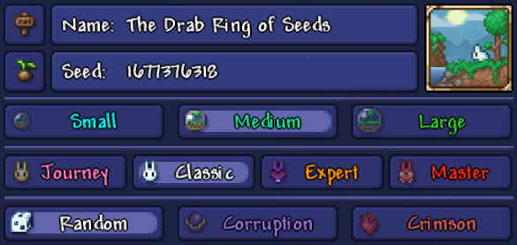
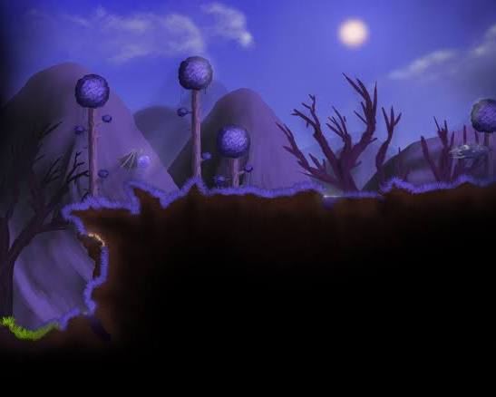
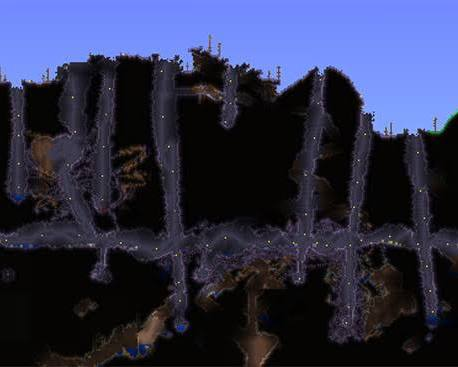
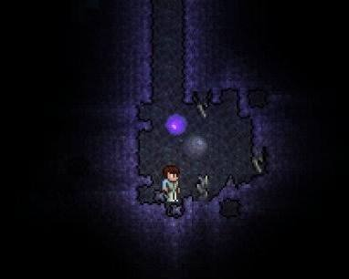
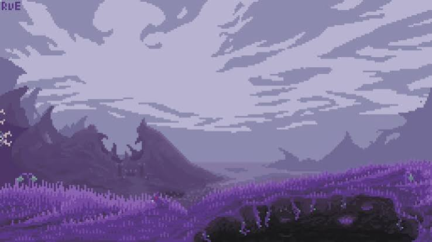
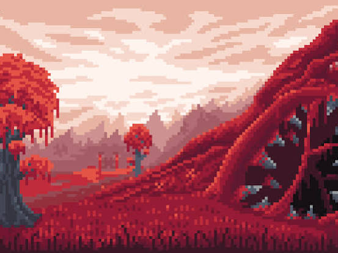
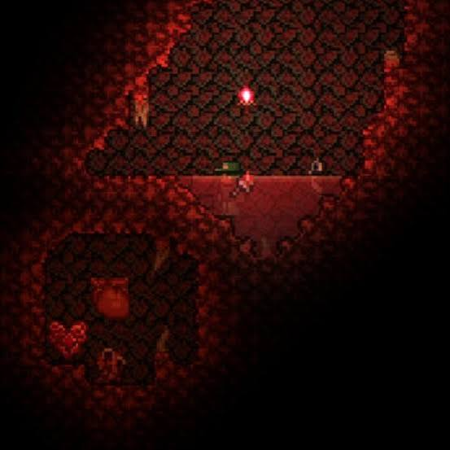
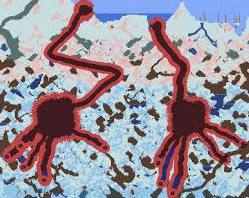
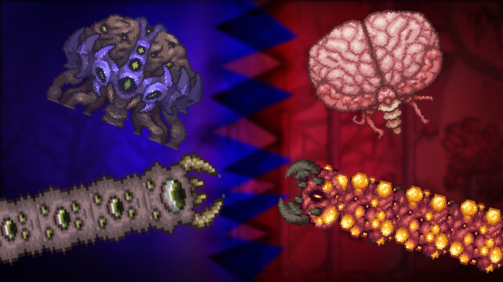

Harita Çeşitleri
Terraria'da farklı harita çeşitleri vardır. Her biri kendine özgü özelliklere ve zorluk seviyelerine sahiptir.haritaaları etkileyen faktörler dünya boyutu, kötülük biyomu türü ve zorluk modu şeklinde sınıflandırabiliriz.Aynı zamanda özel tohumlar ile de dünyalar oluşturulabilir.
1. Dünya Boyutu (World Size)
Terraria'da üç farklı dünya boyutu vardır. Her biri farklı oyun deneyimleri sunar:
1-Küçük (Small - 4200 x 1200 karo): Hızlı keşif yapmak, kaynak toplamak ve çabuk bitirmek isteyenler için idealdir.
2-Orta (Medium - 6400 x 1800 karo): Tek başına veya 2-3 kişilik gruplar için en dengeli boyuttur; ne çok uzun yürütür ne de dar gelir.
3-Büyük (Large - 8400 x 2400 karo): Geniş binalar yapmak, çok sayıda oyuncuyla oynamak ve uzun süren maceralar yaşamak içindir.

2. Kötülük Biyomu (Evil Biome)
Dünya oluşturulurken rastgele ya da oyuncu seçimiyle belirlenir.İki ana kötülük biyomu vardır:
1-The Corruption (Yozlaşma): Mor renkli, kanyonlar ve uçurumlarla dolu klasik evil biyomdur. Özel ödülü Worm Scarf gibidir.




2-The Crimson (Kızıl): Kırmızı, damarlı, etimsi ve daha organik mağaralara sahip biyomdur. Özel ödülü Brain of Cthulhu ve güçlü aksesuarları vardır.



3-Rastgele (Random): Oyunu rastgele bir şekilde bu iki biyomdan biriyle oluşur.

3. Dünya Zorluk Modları (World Difficulty)
Oyun, dört farklı zorluk moduna sahiptir. Her biri farklı oyun deneyimleri sunar:
1-Journey (Yolculuk): Eşya çoğaltma, tanrı modu (ölümsüzlük) ve canavar yoğunluğunu ayarlama gibi hile benzeri kolaylıklar sunar (Sadece Journey karakterlerle girilir).
2-Classic (Klasik / Normal): Oyunun standart, orijinal zorluk seviyesidir.
3-Expert (Uzman): Boss'ların yeni saldırı kalıpları kazanır, canavarlar daha çok vurur ve sadece Expert'e özel değerli eşyalar (Treasure Bag) düşer.
4-Master (Usta): Expert'ten bile daha zordur; yaratıklar can yakar, boss'lar ekstra cana sahiptir ve fazladan 1 aksesuar slotu açılır.